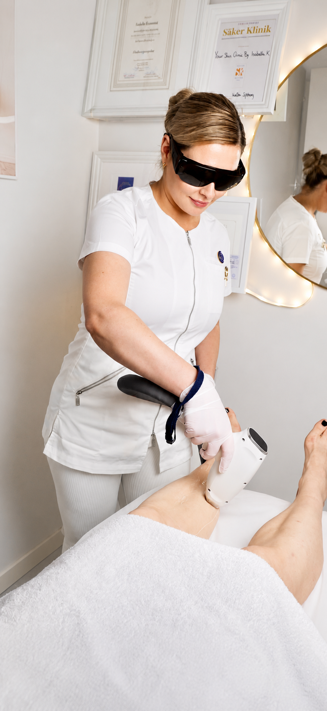
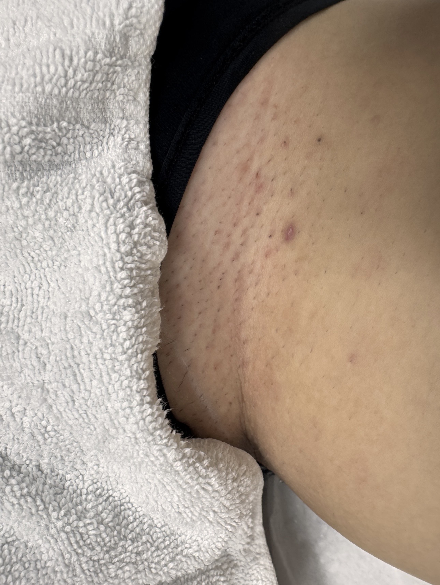
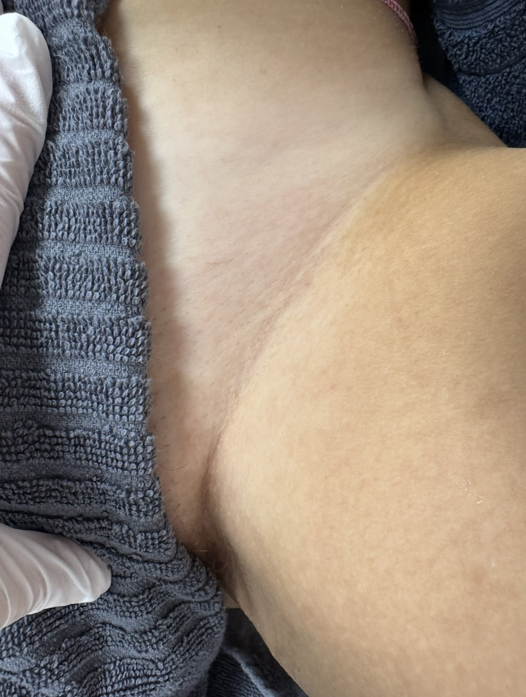
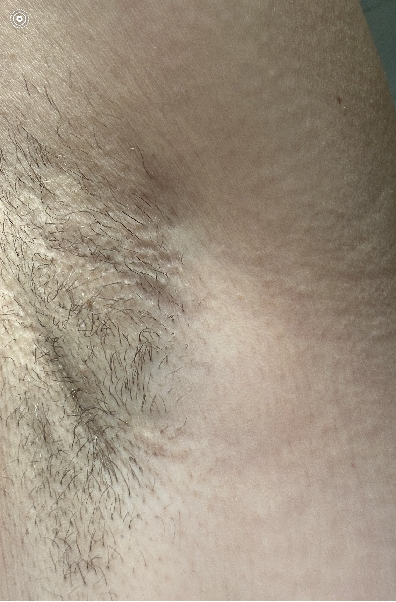
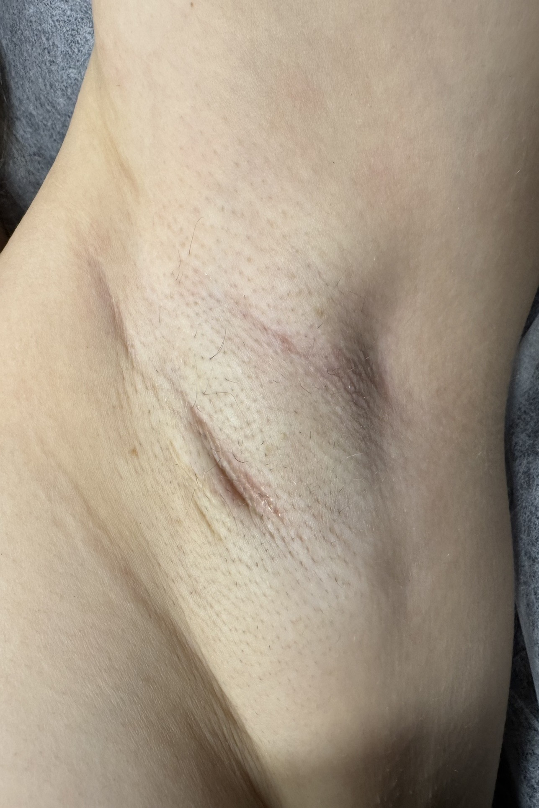
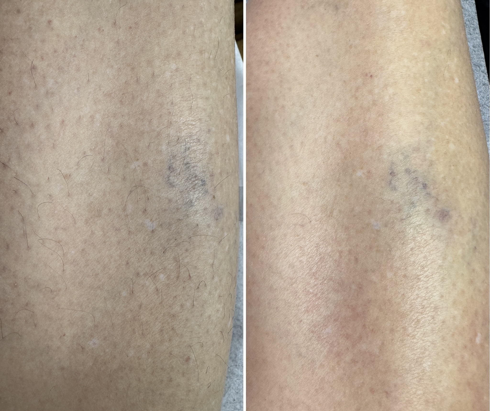

Permanent hårreduktion med Aldix Smart Laser – 808nm diodlaser
Vi använder Aldix Smart Laser med 808nm diodlaser – en kliniskt beprövad teknik för långsiktig reduktion av hår med pigment. Behandlingen är effektiv på mörka hårstrån och anpassas efter din hudtyp, område och hårväxt.
Laser fungerar genom att ljusenergin absorberas av melaninet (pigmentet) i hårstrået och omvandlas till värme som förstör hårsäcken. Därför fungerar behandlingen bäst på mörka hårstrån mot ljusare hud – men vi kan behandla alla hudtyper med rätt inställningar.
Eftersom hårstråna växer i cykler och lasern bara kan påverka hår i aktiv växtfas (anagenfasen) krävs flera behandlingar för att fånga alla hårstrån. Det är därför du behöver komma tillbaka vid flera tillfällen.
Den enda fasen då laser är effektiv. Hårstrået är kopplat till hårsäcken och innehåller mest melanin. Cirka 20–30% av kroppens hårstrån befinner sig i denna fas vid varje tillfälle.
Hårstrået lossnar från hårsäcken och slutar växa. Lasern har ingen effekt i denna fas eftersom det inte finns kontakt med cellerna som skapar nytt hår.
Hårsäcken vilar och hårstrået faller ut. Lasern har ingen effekt. Det nya hårstrået som sedan börjar växa kommer behandlas vid nästa session.
Grov, mörk hårväxt på ljus hud
Ljusare hår (ej blont) eller finare hårstrån
Exakt antal kan aldrig garanteras – det beror på hormonell status, hårtyp, område och individuella växtcykler.
Varje vecka × 4, sedan paus 4 veckor
Ansiktshår växer snabbare och har kortare växtcykler. Därför behandlas det oftare i början för bästa resultat.
Var 6–8:e vecka
Hårväxten på kroppen och intimområdet har längre växtcykler och behöver tid mellan behandlingarna.
Var 8–12:e vecka
Benhår har de längsta växtcyklerna och kräver längre paus mellan behandlingarna för att fånga nya hårstrån i anagenfas.

Före
Efter
Före
Efter
Före EfterBilderna är exempel. Resultatet varierar mellan individer beroende på hårtyp, hudtyp, hormonella faktorer och behandlingsintervall.
Laser fungerar på alla som har mörka hårstrån – oavsett hudton. Vi anpassar inställningarna efter din hud- och hårtyp. Däremot fungerar det inte på ljusa, röda, grå eller vita hårstrån eftersom de saknar tillräckligt melanin. Vi behandlar heller inte vellushår (fjun) då det kan trigga grövre hårväxt.
Det varierar beroende på hårtyp, område och hormonell status. Generellt behövs 6–8 behandlingar vid grov mörk hårväxt på ljus hud, och 10–12 behandlingar vid ljusare eller finare hår. Vi kan aldrig ge en exakt siffra eftersom hårväxt påverkas av faktorer utanför vår kontroll.
De flesta beskriver det som ett lätt "snäpp" eller värmekänsla. Aldix Smart Laser har inbyggd kylning som gör behandlingen bekväm. Känsliga områden som bikinilinje kan upplevas som mer intensiva, men de flesta tycker att det är fullt hanterbart.
Behandlingen utförs inte vid graviditet eller amning, på skadad/irriterad/infekterad hud, på kraftigt solbränd hud, eller om du använder fotosensitiva mediciner. Ljusa, röda och grå hårstrån kan inte behandlas.
Ovanliga men möjliga biverkningar inkluderar postinflammatorisk hyperpigmentering (mörka fläckar), hypopigmentering (ljusa fläckar), eller ytlig irritation. Risken ökar avsevärt om eftervårdsråd inte följs eller om huden är solpåverkad. Vi informerar alltid noggrant före behandling.
Raka området 24 timmar innan eller samma dag. Lämna gärna en liten yta orakad vid första besöket så vi kan bedöma hårtypen. Området ska vara fritt från brun-utan-sol, retinol, syror och oljor i 5–7 dagar innan. Undvik solning 2 veckor före behandlingen.
Direkt efter kan du se rodnad, värmekänsla, lätt svullnad runt hårsäckarna och små prickar – detta är normalt och avtar inom 1–48 timmar. Undvik sol, träning, bastu och varma bad i 48 timmar. Använd SPF 50 dagligen och inga aktiva produkter (retinol, syror) i 5–7 dagar.
Vi kallar det permanent hårreduktion – inte permanent hårborttagning. De flesta upplever 80–90% reduktion av hårväxten efter en fullständig behandlingsserie. Hormonella förändringar (graviditet, menopaus, mediciner) kan dock aktivera nya hårsäckar, och underhållsbehandlingar kan behövas 1–2 gånger per år.
Ja. Vi erbjuder 20 % rabatt vid köp av kur — paket om 6 behandlingar. Detta är vårt rekommenderade upplägg eftersom hårväxt sker i cykler och flera sessioner krävs för att nå alla aktiva hårsäckar.
Exempel på kurpriser (6 behandlingar):
Fråga vid bokning eller konsultation för exakt prisuppgift för ditt valda område.
Ja. Your Skin Clinic är registrerad hos Strålsäkerhetsmyndigheten i enlighet med svensk lagstiftning för estetiska laserbehandlingar (SSMFS 2020:9). Sedan 1 januari 2021 är estetiska laserbehandlingar i Sverige reglerade och får endast utföras av certifierad personal med godkänd utrustning.
Vår Aldix Smart Laser genomgår obligatorisk årlig service och säkerhetskontroll av Astomed, auktoriserad serviceleverantör för medicinsk laserutrustning. Senaste servicetillfället var 8 maj 2026. Detta säkerställer att utrustningen levererar korrekt energi och uppfyller alla säkerhetskrav.
"Isabella är otroligt trevlig, lättsam och rolig! Kände mig väldigt bekväm under min laserbehandling."
Google"Så trevlig och bra upplevelse hos Isabella. Tryggt, bekvämt och man blir verkligen lyssnad på. Rekommenderar verkligen!"
Google"Isabella är proffsig, vänlig och kunnig. Rekommenderar!"
Google"Så nöjd med behandlingarna – väldigt professionellt arbete och bemötande. Känner mig så trygg hos Isabella. Laserbehandlingen blev toppen och resultatet väldigt bra."
Google"Var hos Isa för laserhårborttagning och kan verkligen rekommendera – otroligt fint bemötande och väldigt noggrann."
Bokadirekt"Var där för brasiliansk hårborttagning med laser. Supernöjd med upplevelsen, Isa var så trevlig och proffsig. Kan bara rekommendera Your Skin Clinic."
Bokadirekt"Gjorde en laserbehandling som gick som en dans. Var rädd att det skulle göra ont, men det gjorde det inte."
Bokadirekt"Gjorde hårborttagning med laser och är otroligt nöjd! Isa var extremt noggrann och professionell – inget hårstrå lämnades kvar. Fantastiskt arbete!"
BokadirektBoka en konsultation så bedömer vi din hår- och hudtyp och rekommenderar bästa upplägg för dig.